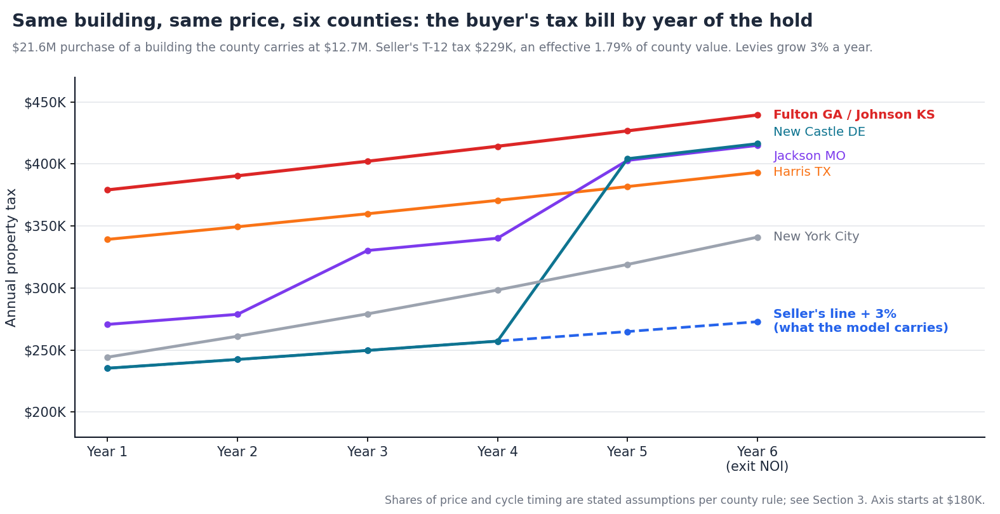
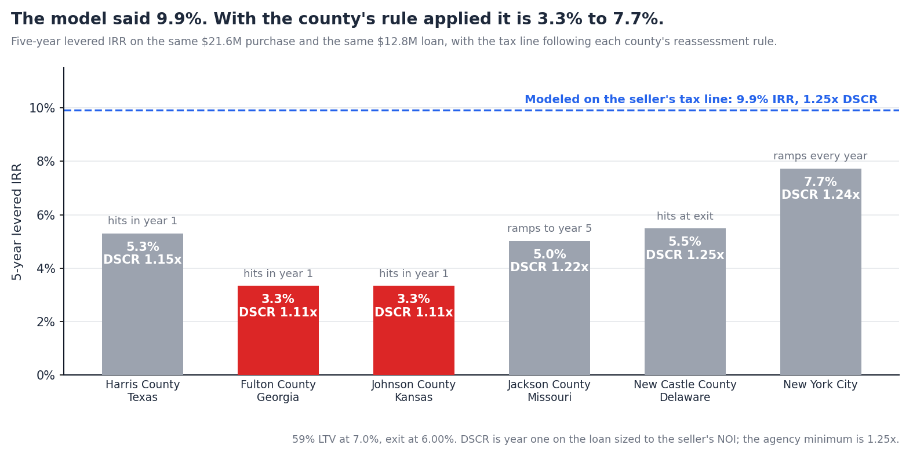

How Property Tax Reassessment Works After a Multifamily Sale, County by County
Summary. The property tax line on a trailing-twelve statement is the tax on the seller's assessed value. The buyer pays on a value the county sets after the sale, under a rule that changes at the state line and sometimes at the county line. It is also the line most underwriting models handle worst: the seller's bill is carried forward at 3% a year, and the correction arrives at lender sizing, after the price is agreed.
This note goes through the mechanics county by county for the markets Teez covers, sets out the method that turns a county record and a T-12 into the buyer's bill, and runs one building through six rules. Findings:

A T-12 gives one number for property tax: what the seller paid. The buyer's bill is built from three others.
The county's current value for the building. Every assessor publishes it: appraised value in Texas, fair market value in Georgia, market value in New York City. Alongside it sit the prior year's value, the last deed date, and any exemption or abatement on file. This is public record, by parcel, and it is the starting point because it says how far the roll is from the price being paid.
The effective rate that value implies. Property tax is a stack of levies: county, city, school district, hospital, community college, special districts. Looking up each rate is slow and error-prone, and unnecessary. Divide the T-12 tax line by the county's current value and the result is the building's own effective rate, with every levy and every exemption already in it. A $229K tax line on a $12.74M value is 1.79%.
The rule. How much of the purchase price the county will reach, in which year, and under what cap. This is the part that varies by county, and it is Section 2.
The buyer's bill in any year is then the purchase price, times the share of it the county has reached by that year, times the effective rate, grown for levy increases. Two checks sit alongside. If the implied rate is far outside the county's normal range, the T-12 is carrying an abatement, an exemption or a partial year, and the seller's bill is wrong in a second way. And special assessments belong on their own line, because they do not reassess.
These are the rules for the markets Teez has county records loaded for. Each was current as of this note's date; several changed within the last two years.
| Market | Cycle | What a sale does | Caps and quirks |
|---|---|---|---|
| Texas Harris County | Reappraised to market value every January 1. | Nothing by statute. Texas does not disclose sale prices, so the appraisal district gathers what it can from brokers, buyers and sellers, and can ask for the closing statement in a protest. | The 20% circuit-breaker cap covers only property under about $5.32M and expires December 31, 2026. Protests are due May 15 or 30 days after the notice; unequal appraisal is a ground that needs no sale price. |
| Georgia Fulton, DeKalb, Cobb, Gwinnett | Annual, as of January 1. Assessed at 40% of fair market value. | Until 2024 the sale price was the maximum value for the following tax year. House Bill 581 removed that for tax years from 2025. A sale is now evidence of value, not a ceiling on it. | The income approach must be considered for income property. Appeals are due 45 days from the notice. |
| Kansas Johnson County | Annual, as of January 1. Multifamily assessed at 11.5%. | The price is reported. A deed cannot be recorded without a sales validation questionnaire stating the total sale price, and the appraiser is held to 90% to 110% of sale prices in ratio studies. | Apartments rose about 11% in the county's 2026 revaluation, against about 6% for other residential property. |
| Missouri Jackson County | Reassessed every odd-numbered year. Multifamily assessed at 19%. | Nothing until the next odd year. Missouri does not disclose sale prices. | State Tax Commission orders limited the 2023 and 2025 increases to 15% each from a 2022 baseline. The county treats multifamily as within the order. |
| Delaware New Castle, Kent, Sussex | County-wide reassessments, now required at least every five years. | Nothing until the next county-wide reassessment. | The 2024–2025 reassessments were the first since 1983, 1987 and 1974. Values are fresh now and will drift until the next cycle. |
| New York City Class 2, 11+ units | Annual. Assessed at 45% of market value. | Nothing. The Department of Finance values rental buildings by capitalizing income from the owner's annual filing, not from sales. | Changes phase in at 20% a year over five years, and the bill uses the lower of actual and transitional value. The tentative 2026/27 roll raised Class 2 market value 6.9%. |
Four of these six changed recently. Georgia removed its sale-price ceiling for 2025. Delaware reassessed for the first time in forty years. Jackson County's increases are under state order. Texas's cap lapses at the end of this year. Outside these markets the pattern is the same: Florida voters cut the non-homestead cap from 10% to 5% on November 3, while keeping the reset to market value on a change of ownership; California still resets to the purchase price at closing; Cook County waits for its triennial cycle. A reassessment assumption written once and reused is out of date within a year or two.
Lenders already underwrite the buyer's bill. Fannie Mae's Multifamily Guide, as of the September 28, 2026 edition, sets underwritten real estate taxes at the greatest of the actual future tax bill for a full year, the prior full year's taxes times 103%, or assessed taxes, and says that where a property is subject to a scheduled reassessment or an abatement phase-in, "tax expense should be adjusted appropriately." A sponsor who carried the seller's line finds out at sizing.
The building is the one used throughout this series: $21.6M at a 5.75% cap, $1.24M of NOI, with a $229K tax line on the seller's T-12. Suppose the county carries it at $12.74M, 59% of the price, which is ordinary for an asset held eleven years. The effective rate is 1.79% of county value. We apply each county's rule to that one building, with levies growing 3% a year.
| County rule | Share of price | When | Tax, year 1 | Year 3 | Year 5 |
|---|---|---|---|---|---|
| Seller's line, grown 3% | 59% | never | $235K | $250K | $265K |
| Harris County, Texas | 85% | first January 1 | $339K | $360K | $382K |
| Fulton County, Georgia | 95% | first tax year | $379K | $402K | $427K |
| Johnson County, Kansas | 95% | first January 1 | $379K | $402K | $427K |
| Jackson County, Missouri | +15% per cycle | each odd year | $271K | $330K | $403K |
| New Castle County, Delaware | 90% | next county-wide reassessment, year 5 | $235K | $250K | $404K |
| New York City | not tied to price | every year, with income | $244K | $279K | $319K |
The shares are assumptions, and they are the judgment in the estimate. We use 85% of price in Harris County because the district does not see every sale and protests succeed; 95% in Fulton and Johnson because the price is known to the assessor; 15% a cycle in Jackson County because that is what the state has allowed twice; and 90% at Delaware's next reassessment. A sponsor with local knowledge should change them. What should not be an assumption is the county's current value, the rate, or the rule.
The first-year step is 44% in Texas and 61% in Georgia and Kansas. Against a model carrying $235K, the Harris County bill is $339K and the Fulton and Johnson County bills are $379K. That is $104K to $144K of NOI the model has and the building does not.
Deferral is not relief. Jackson County's capped increases reach $403K by year five. New Castle County's bill is the seller's until the next reassessment, then $404K. Both end the hold at about the same tax as the counties that stepped in year one, and the exit is priced on it.
59% leverage at a 7.0% coupon, sized to a 1.25x DSCR on the seller's NOI, five-year hold, 3% growth on every other line, exit at 6.00% on forward NOI.
| County rule | Year-1 DSCR | Lender's loan vs the model's | Exit value | 5-yr levered IRR |
|---|---|---|---|---|
| Seller's line, grown 3% | 1.25x | $12.8M | $24.7M | 9.9% |
| Harris County, Texas | 1.15x | −$1.0M | $22.7M | 5.3% |
| Fulton County, Georgia | 1.11x | −$1.4M | $21.9M | 3.3% |
| Johnson County, Kansas | 1.11x | −$1.4M | $21.9M | 3.3% |
| Jackson County, Missouri | 1.22x | −$0.4M | $22.3M | 5.0% |
| New Castle County, Delaware | 1.25x | unchanged | $22.3M | 5.5% |
| New York City | 1.24x | −$0.1M | $23.5M | 7.7% |

One dollar of tax is seventeen dollars of value. At a 5.75% cap each dollar of annual tax capitalizes to $17.40, and at a 1.25x DSCR and a 7.0% coupon it removes $10 of loan proceeds. No other line on the T-12 moves by half on a known date.
Where the step lands in year one, the loan is the first casualty. In Harris, Fulton and Johnson Counties, year-one coverage is 1.11x to 1.15x on a loan sized to the seller's NOI. A lender sizing to the reassessed bill offers $1.0M to $1.4M less. The sponsor meets that number after the LOI, as a larger equity check or a retrade.
Where the step is deferred, the exit is. Jackson and New Castle Counties pass the coverage test and lose four and a half points of IRR anyway. The next buyer underwrites the bill the county is about to send, and the exit value falls from $24.7M to $22.3M. A model that looks only at year-one coverage calls these deals clean.
The price adjustment is larger than this year's cap rate argument. To earn the modeled 9.9% with the county's rule applied, the price has to fall 6.4% in Harris County and 8.7% in Fulton County.
Nothing in Section 2 is secret. The reason the seller's line survives into first-pass models is structural.
The inputs are not in the deal documents. The county's value is on the county's website, by parcel. The rule is in a statute, a state order or an assessor's manual. The calendar is somewhere else again. A tool that reads the offering memo, the T-12 and the rent roll has read everything it was given and still has none of the three numbers.
A template can hold a tax line and a growth rate. It cannot know the county. Any spreadsheet can carry a reassessed figure once someone has worked it out. Working it out is the job: find the parcel, read the roll, establish the rule for this county this year, decide the share, place it in the right year. Tools that stop at parsing the T-12 carry the seller's number forward by default, with a growth rate that implies the county will never notice the sale.
The rules move. Four of the six markets above changed their rule or their roll in the last two years. An assumption a sponsor learned on the last deal in a county may be wrong on the next one.
It costs hours, so it happens late. An analyst screening ten to fifteen offering memos a week spends twenty to thirty minutes a deal on data entry to reach a kill decision, as our back-office note documented. A parcel lookup and a rule check per deal does not fit in that budget. It is done for the deals that survive, after a bid built on the wrong NOI.
Teez computes the buyer's tax bill as part of building the model, on every deal, at first look. It can because it joins two things other tools keep apart: the deal documents and the county's own record for the property.
It pulls the county record from the address. When the documents are parsed, Teez looks the property up in its registry of county records and returns the county's current value, the prior year's value, the last deed date and how long the seller has held, and any exemption or abatement on file with its expiry. Today that covers Houston, four Atlanta counties, Delaware's three counties, Kansas City on both sides of the state line, and New York City.
It derives the rate from the seller's own bill. Teez divides the T-12 tax line by the county's value to get the building's effective rate, with every levy in it, and flags the deal when that rate is outside the county's normal range, which is the signature of an abatement or a partial-year bill.
It applies the county's rule and shows its work. For each market it holds the cycle, what a sale triggers, the cap and the share of price it expects the county to reach, each with its source and the date it was last checked. The sponsor sees the rule and can override the share or the year.
It writes the tax line year by year. The model's property tax row stops being last year's bill times a growth rate. It becomes the estimate for each year of the hold, in the sponsor's own Excel template, and coverage, cash flow and the exit recompute from it.
| What Teez returns for the building in Section 3, in Harris County | |
|---|---|
| County record | Appraised value $12,740,000 on the 2026 roll; $12,100,000 the year before (+5.3%). Last deed 2015; held 11 years. No exemption on file. |
| Seller's bill | $229,000 on the T-12, an effective 1.79% of the county's value. |
| Purchase price | $21,600,000, or 170% of the county's value. |
| Rule | Reappraised to market value each January 1. No sale trigger; sale prices are not disclosed. No cap above $5.32M of value. |
| Estimate | 85% of price from the first January 1. Editable. |
| Tax line written to the model | Year 1 $339K, year 2 $349K, year 3 $360K, year 4 $371K, year 5 $382K. The seller's line grown 3% would have been $235K in year 1. |
| Effect | Year-1 DSCR 1.15x against 1.25x on the seller's line. Five-year IRR 5.3% against 9.9%. |
Where the county is not loaded, the sponsor supplies one number. Enter the county's current value from the assessor's site and Teez does the same arithmetic, with the state's rule where it has one.
It is an estimate, and it says so. Teez does not predict a protest outcome or an assessor's judgment. The share of price is a stated assumption the sponsor can change. What it removes is the parcel lookup, the rate arithmetic, the rule research and the year-by-year entry, which is the part that takes hours and is why the check gets deferred.
The reassessment question does not need a better opinion. It needs to be asked on every deal before the bid, which only happens if asking it takes minutes.
Teez takes an OM, T-12 and rent roll to a full model in minutes and, from the property's address, pulls the county record, derives the tax rate from the seller's own bill, applies the county's reassessment rule and writes the buyer's tax line year by year, in the sponsor's own Excel template, so the reassessed bill is in the model before the bid instead of at lender sizing. More at teez.ai.